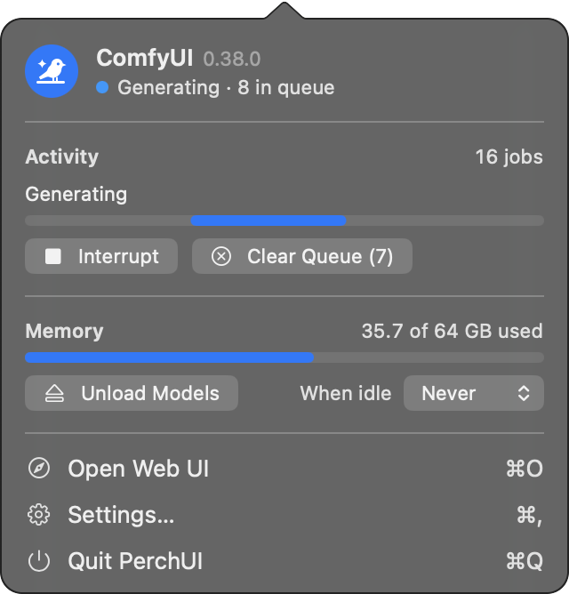
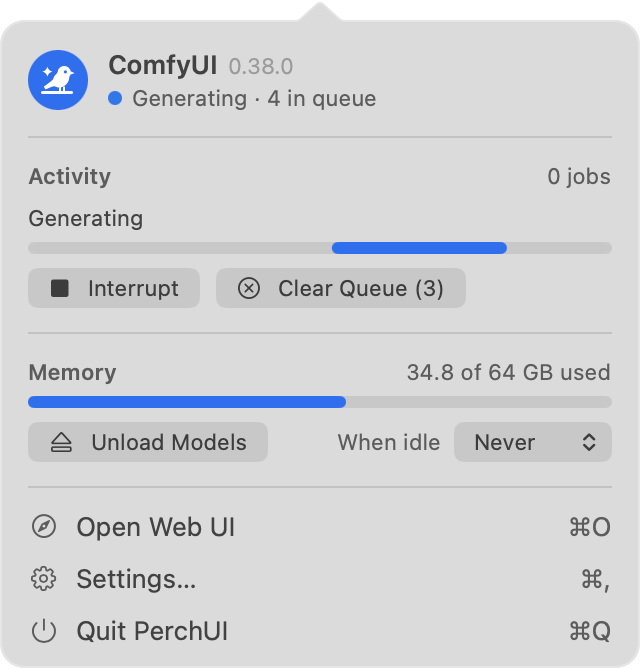
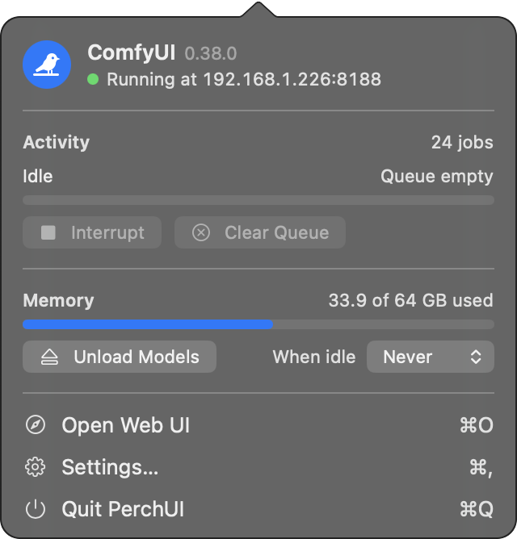
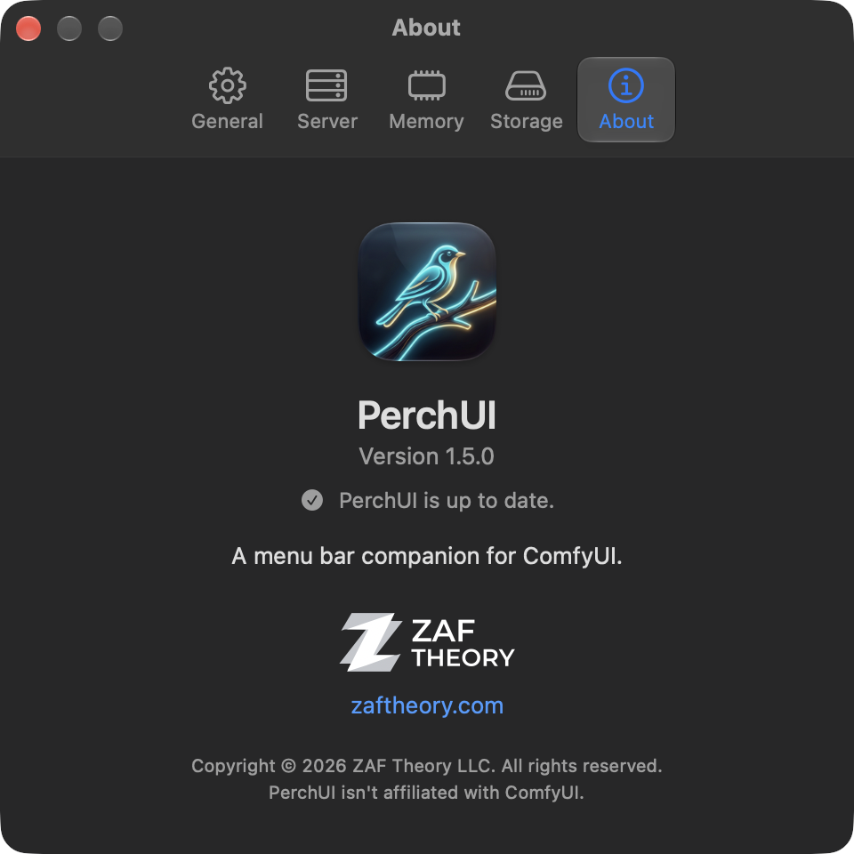

PerchUI
A menu bar companion for ComfyUI. Start it, watch it work, and free its memory when you're done.
Screenshots
-

Generating, with the queue and memory at a glance
-

The same panel in light mode
-

Watching ComfyUI on another computer
-

About, with its update check


Why PerchUI
ComfyUI runs in a terminal window and a browser tab, and neither tells you much while you're doing something else. PerchUI sits in the menu bar instead: a songbird that's hollow while ComfyUI is stopped, solid while it's ready, and sparkles while it generates, with the progress of the current job beside it. Click it to start or stop the server, see the queue, and check how much memory ComfyUI is holding.
- One Switch: Start and stop ComfyUI from the menu bar, or have it start when PerchUI opens. If it crashes, PerchUI can restart it.
- Live Progress: The current step, time left, and how many jobs are waiting, right in the menu bar.
- Queue Controls: Interrupt the running job or clear the queue without opening the browser.
- Memory, Handled: See ComfyUI's share of your Mac's memory, unload its models in one click, or let PerchUI unload them after the queue has been idle for a while.
- Only Your Server: PerchUI only controls the ComfyUI running from your own folder, and leaves any other server on the port alone.
- Another Computer, Too: Watch the queue, progress and memory of ComfyUI running on another Mac or PC on your network.
- Stays Out of the Way: No Dock icon, notifications only when ComfyUI is ready, a queue finishes or something goes wrong, and no data collected.
Install
- Unzip and move PerchUI.app to your Applications folder.
- Open it. The songbird appears in the menu bar.
- If your ComfyUI isn't in ~/ComfyUI, click the songbird and choose your ComfyUI folder, the one that contains main.py.
PerchUI has no Dock icon or main window. Click the songbird for the panel; Settings (⌘,) has open at login, the server's port and folder, and ComfyUI on another computer. If ComfyUI starts with a start-comfy.command script in its folder, PerchUI uses it; otherwise it finds ComfyUI's Python environment.
Privacy
PerchUI talks only to your ComfyUI server. When you open About in Settings, it loads this page to compare versions, and sends nothing else. It collects nothing.